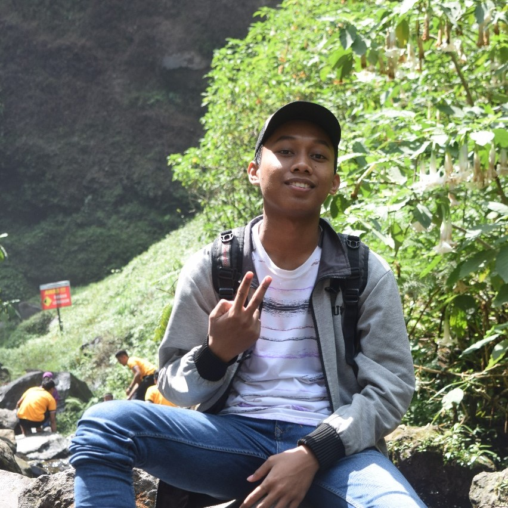

Hello everyone, it's my profil :)

Haloo teman-teman semua, welcome to my website. Kenalan dulu yuk sama aku. Namaku Riki Indramawan, kalian bisa panggil aku Riki. Kota asalku dari Jombang dan sekarang aku sedang melanjutkan study di jurusan Sistem informasi, Institut Teknologi Sepuluh Nopember (ITS), Surabaya. Pada bulan Agustus lalu, umur ku genap 19 tahun. Hobiku futsal sama main game online. Jadi itu profil ku ya teman-teman. Salam kenal :)
Link For PWEB Assignment
Berikut ini adalah link untuk tugas PWEB tentang css dan bootstrap, silakan klik tombol dibawah ini untuk dapat melihatnya
Institut Teknologi Sepuluh Nompember (ITS)

Institut Teknologi Sepuluh Nopember (ITS) yang didirikan pada 10 November 1957 diresmikan oleh Presiden Soekarno. Saat ini (2020), ITS berstatus sebagai Perguruan Tinggi Negeri Badan Hukum (PTN-BH) dengan akreditasi peringkat A. Kampus yang bermotto ITS CAK (Cerdas, Amanah, Kreatif) ini pada awal berdirinya hanya memiliki dua fakultas. Kini, ITS memiliki lima fakultas. ITS memiliki jurusan ilmu dasar yang berorientasi pada penguatan pengembangan energi, kelautan, dan lingkungan yang sejalan dengan program pemerintah dan isu internasional.
Gagasan pendirian Institut Teknologi Sepuluh Nopember dicetuskan oleh Ir. Soendjasmono (wakil Persatuan Insinyur Indonesia dari Jawa Timur) pada konferensi Persatuan Insinyur Indonesia II di Bogor 1954. Gagasan lain didirikannya Institut Teknologi Sepuluh Nopember berawal dari usul pendirian Yayasan Perguruan Tinggi Teknik (YPTT) di Surabaya oleh dr. Angka pada Lustrum I PII Jawa Timur. Peresmian YPTT dilakukan oleh Presiden Soekarno pada 10 November 1957. Peristiwa tersebut ditandai dengan penandatanganan Piagam Perguruan Teknik 10 Nopember Surabaya. Pada saat itu, baru dua departemen yang dibuka, yaitu Departemen Teknik Sipil dan Departemen Teknik Mesin.
Departemen Sistem Informasi, ITS

Departemen Sistem Informasi Institut Teknologi Sepuluh Nopember (ITS) mempelajari pengembangan dan manajemen suatu informasi, pemodelan proses bisnis, hingga integrasi sistem. Selain meningkatkan ilmu perihal sistem informasi, mahasiswa juga belajar untuk menjadi kreatif dan inovatif, memiliki sifat kepemimpinan, terintegrasi, serta dapat bekerja dengan baik dalam sebuah tim. Departemen ini memiliki misi untuk memberikan kualitas pendidikan yang sangat baik dalam hal informasi, mengembangkan dan menerapkan ilmu yang dapat bermanfaat untuk masyarakat dan negara, serta memberikan kepuasan dan kesejahteraan kepada sivitas departemen. Hingga saat ini Departemen ini telah menyediakan fasilitas pendidikan yang memadai terkait pengajar, fasilitas di dalam gedung, dan relasi yang ditawarkan. Pengajar yang disediakan berjumlah 37 orang dengan rincian 9 pengajar sebagai Laboratory MSI, 8 orang Laboratory SE, 6 orang Laboratory IKTI, 8 orang Laboratory RDIB, dan 6 orang Laboratori ADDI. Dan dalam menuntut ilmu, mahasiswa dapat memanfaatkan 5 ruang laboratorium sesuai bidang mata kuliah.Selain memiliki kualitas pengajar dan fasilitas yang memadai kebutuhan pembelajaran, Departemen ini juga memiliki mahasiswa yang terus berprestasi dan mengharumkan nama ITS. Prestasi tersebut diantaranya meraih juara poster terbaik dalam lomba ASEAN-EU STI Days, section : smart cities & ICT systems for rural areas di Hanoi-Vietnam tahun 2016, peserta terbaik dalam 20 peneliti junior ASEAN dari kursus intensif manajemen teknologi (didukung oleh AUN/SEED-Net JICA) di tahun 2016, dan masih banyak lagi.Pada tahun 2009 Departemen ini meraih penghargaan sebagai jurusan yang memiliki kerja sama terbanyak. Hal tersebut akhirnya mempengaruhi lulusan Departemen Sistem Informasi yang mudah memperoleh pekerjaan maupun menjadi enterpreneur. Beberapa bidang pekerjaan yang dapat menjadi acuan mahasiswa diantaranya IT Operation Staff, Dosen, Business Analyst, System Analyst, Aplication Developer, dan masih banyak lagi.